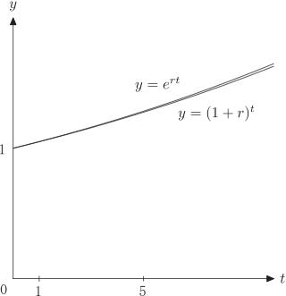
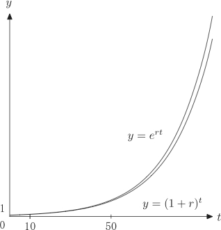

経済学で出る数学
ワークブックでじっくり攻める：応用問題
不等式 $e^{rt}\geq (1+r)^t$（『経出る』図3.6）
不等式
\[
e^{rt}\geq (1+r)^t
\]
が成り立つことを示しなさい．
【解答１】
\[
e^{rt}=\Bigl(\lim_{k\to \infty}\Bigl(1+\dfrac{r}{k}\Bigr)^{k}\Bigr)^t
=\lim_{k\to \infty}\Bigl(1+\dfrac{r}{k}\Bigr)^{kt}
\]
なので，
$\Bigl(1+\dfrac{r}{k}\Bigr)^{k}$が，$k$について単調増加であることを示せば，
$\Bigl(1+\dfrac{r}{k}\Bigr)^{k}\geq \Bigl(1+\dfrac{r}{1}\Bigr)^{1}=(1+r)$
より，
\[
\Bigl(1+\dfrac{r}{k}\Bigr)^{kt}\geq (1+r)^t
\]
を得るので，
$k\to \infty$とすればよい．単調増加であることを示すためには，一般化された相加相乗平均の不等式
\[
\dfrac{a_1+a_2+\cdots +a_{k+1}}{k+1}
\geq \sqrt[k+1]{a_1a_2\cdots a_{k+1}}
\]
を使う．$a_1=a_2=\cdots ＝a_k=\dfrac{k+r}{k}, a_{k+1}=1$として，不等式を使うと，
\begin{align}
\dfrac{\dfrac{k+r}{k}k+1}{k+1}&\geq
\sqrt[k+1]{\Bigl(\dfrac{k+r}{k}\Bigr)^k}\\
\Bigl(\dfrac{k+1+r}{k+1}\Bigr)^{k+1}
&\geq \Bigl(\dfrac{k+r}{k}\Bigr)^k\\
\Bigl(1+\dfrac{r}{k+1}\Bigr)^{k+1}
&\geq \Bigl(1+\dfrac{r}{k}\Bigr)^k
\end{align}
を得る．
【解答１終】
【解答２】
$f(t)=\dfrac{e^{rt}}{(1+r)^t}$とおいたとき，$f(t)\geq 1$であることを示せばよい．準備として$r>0$に対し，$g(r)=r-\log_{}{1+r} > 0$であることを示す．
\[
g^{\prime}(r)=1-\dfrac{1}{1+r}=\dfrac{r}{1+r} > 0
\]
より，$g(r)$は単調増加．従って$r>0$に対し，$g(r) > g(0)=0$．一方，
\begin{align}
f^{\prime}(t)&=\dfrac{re^{rt}(1+r)^t
-e^{rt}(1+r)^t\log_{}{1+r}}{(1+r)^{2t}}\\
&=\dfrac{e^{rt}}{(1+r)^{t}}\bigl(r-\log_{}{1+r}\bigr) > 0
\end{align}
なので，$f(t)$は単調増加．従って$t>0$に対し，$f(t) > f(0)=1$を得る．
【解答２終】
【メモ】
『経出る』図3.6は以下の通り．$r=0.05$で描かれている．


【メモ終】
ふろく（２）応用問題 一覧へ